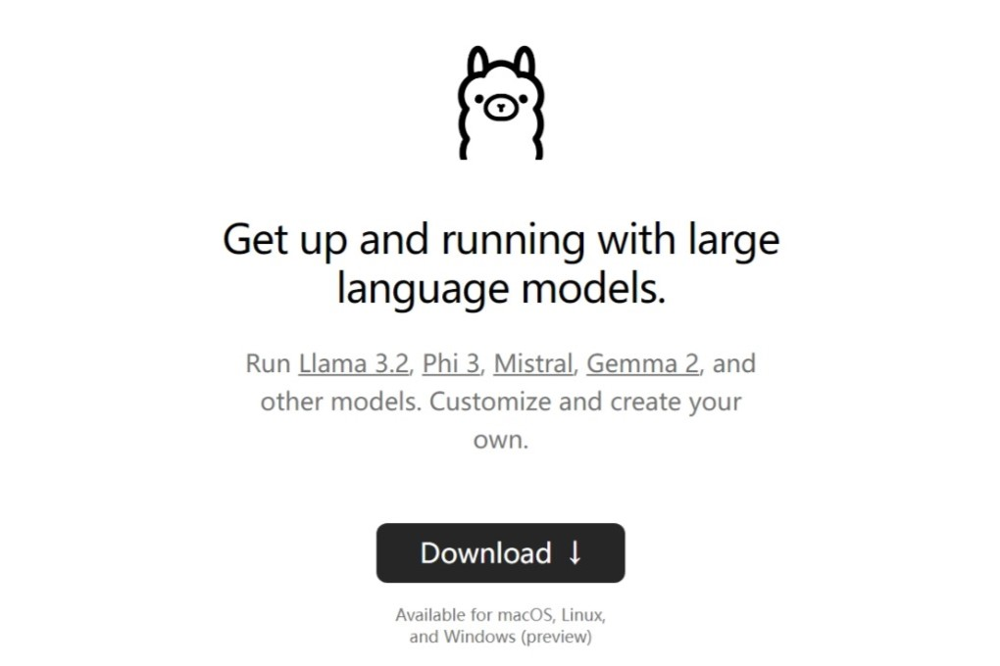
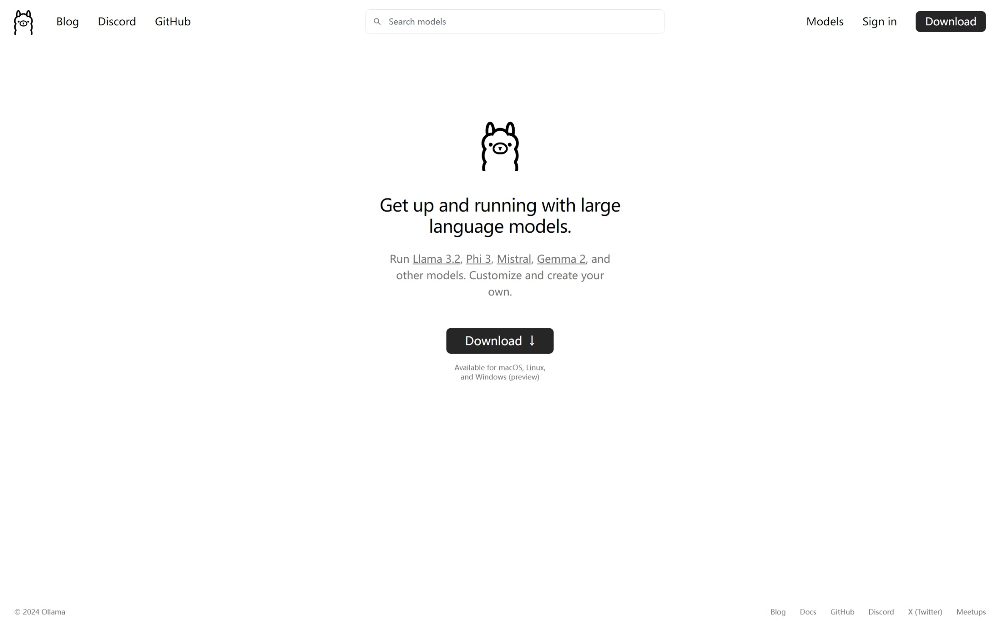
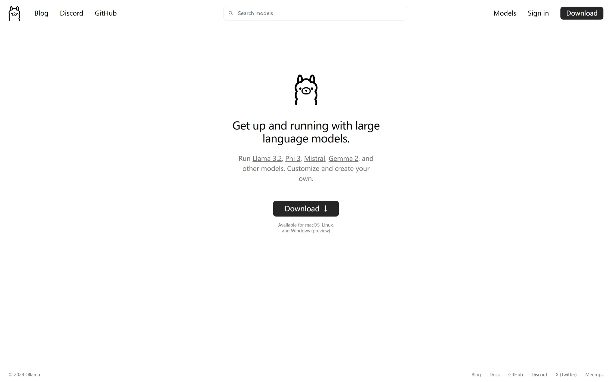
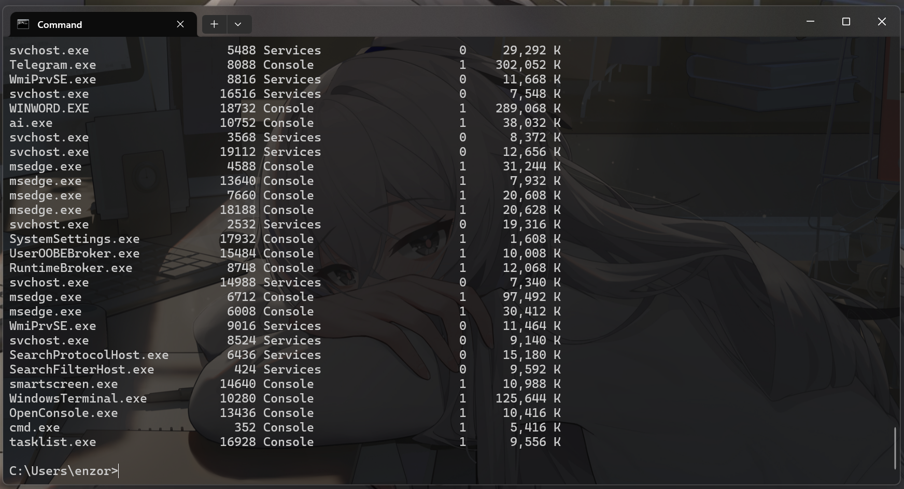

啊对这个不用登录，直接下就行，妥妥良心

诶他肯定有对不对，大神们早就提前做好了
然后看官方文档就行了
Ollama本地部署AI大模型及webui
因为众多AI对AMD显卡不太友好，所以我这台机器不好部署本地AI模型，尤其是文生图大模型（LLaVM）
因此找到一个叫Ollama的（对就是羊驼）nb玩意
nb在哪呢？
支持macOS、Linux、Windows
而且居然还在长城里边（）
憨憨的
这玩意是用cpu跑的，那不就好办了吗。我这边大哥是R7-8845H，整天闲着也不好
先上官网下Ollama程序本体，不大（Windows版664MB）
https://ollama.com/
啊对这个不用登录，直接下就行，妥妥良心

随便安装好之后回到官网，进到Models
这里面展示的是Ollama支持的模型，注意区别各个模型的版本号和不同的体积选项
一般来说，模型版本越新越好，体积大小决定了跑模型的时候加载的数据多少，从而影响生成内容的质量和响应速度。体积越大，需要越好的cpu性能和内存大小，上下文长度越大，生成内容质量越好，响应速度越慢
我比较喜欢谷歌的gemma2，一般选2B就够用了。当然一样推荐的还有Meta的llama、微软的phi、阿里的qwen（千义）、mistral 点开一个模型之后（这里以gemma2 2B为例），选择体积（一定一定要看好），我选择2B，看到右边那一行
ollama run gemma2:2b
我还是会建议你把run改成pull，比较安心。
粘到命令行里
ollama pull gemma2:2b
其实后面熟悉的话可以自己往cmd里敲，包括版本号啥的 然后让他慢慢跑完。一开始他下的还挺快的，后来越来越慢，最后甚至只有几十k，但是一般半小时以内就能下完
然后，就可以
ollama run gemma2:2b
然后你就能愉快的和AI聊了😊
对，绝大多数模型都支持多种语言，随便聊没有问题的。
OK正片结束，以下是进阶（闲篇）
众所周知，Windows的这什么cmd就是个大黑框框，虽然现在改的win11了一点，但还是大黑框框。为了不委屈你的审美，这玩意还是调教调教合适
就是简单的设置一下，在cmd界面仔细找找你就能找到藏在下拉列表里的设置（Windows还贴心的写上了快捷键Ctrl+,）
在外观里启用亚克力，命令提示符>外观里调整背景图像、不透明度
背景图像还能设成当前的桌面壁纸，好评👍
这样不就好看多了
扯完了cmd，再说Ollama的事
诶他肯定有对不对，大神们早就提前做好了
推荐这个大名鼎鼎的：
https://openwebui.com
Github开源
https://github.com/open-webui/open-webui
大神，这必须得给个star
下载最新Release
或者，如果你有git
git clone https://github.com/open-webui/open-webui.git
然后看官方文档就行了
https://docs.openwebui.com
真的不能再详细了
安装方式包括Docker(Recommend)和Pip、Github版
我知道这几个看上去都挺陌生的，所以详细的实操过程再单独分几篇来写，因为这每一个拿出来牵扯到的都是大头😶🌫️
Last edit: 10/14/2024